This is a staff, not a season.
Growers, trimmers, extraction techs, kitchen staff, packaging, compliance, delivery. Veterans. Mothers. People on their second career and people on their first job out of school. Trained, paid, badged, and here every day.
Most of them are patients themselves, or related to one, which is a better quality control department than any policy we could write. Somebody looked at every branch that ends up in a jar with your name on the label.
Hands know things a schedule does not
A person can tell when a room is a day early. A calendar cannot. That is the whole reason we staff the way we do, and the reason harvest day looks like everybody dropped what they were doing, because they did.
The whole crew
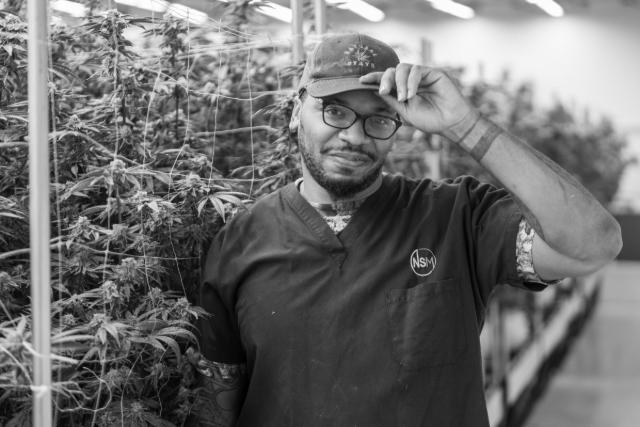
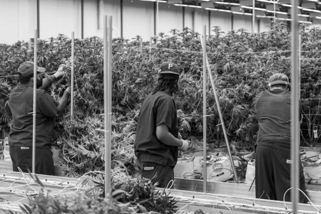
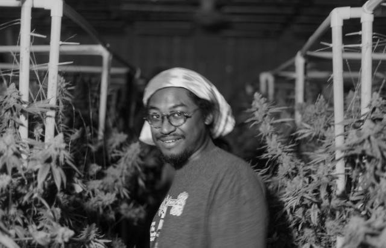
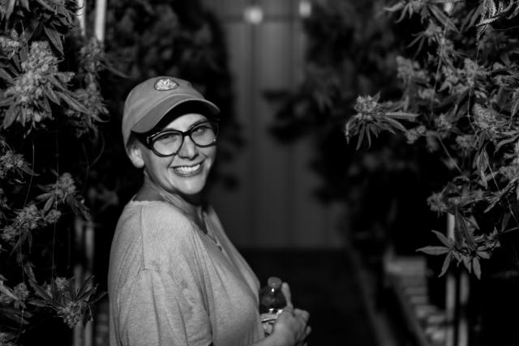
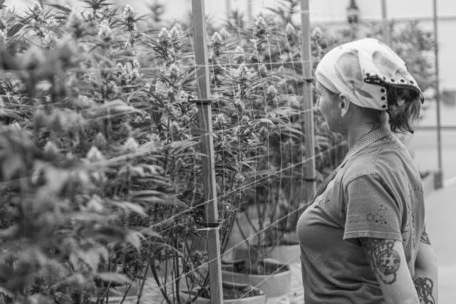
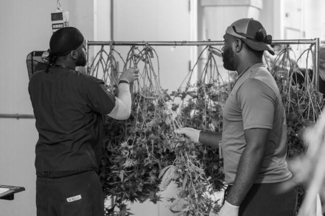
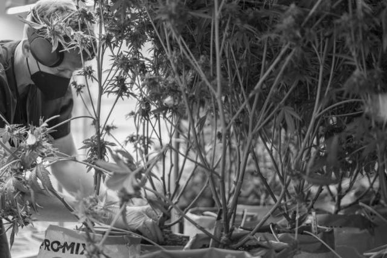
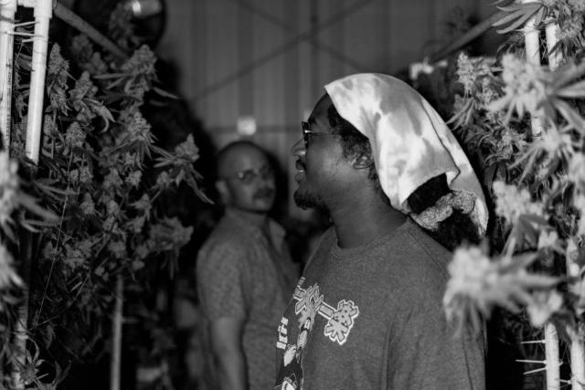
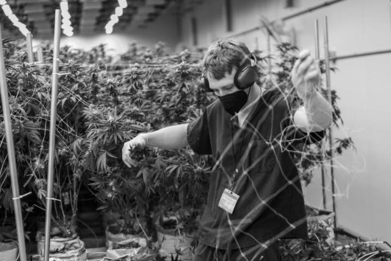
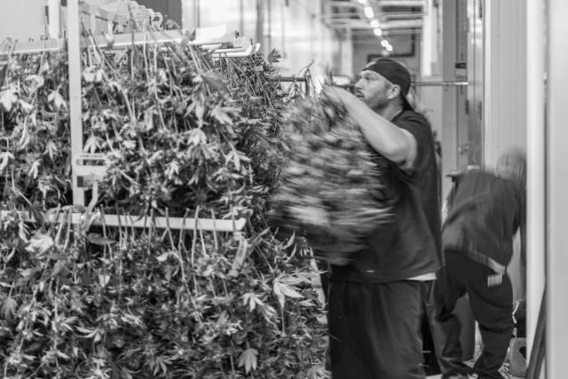
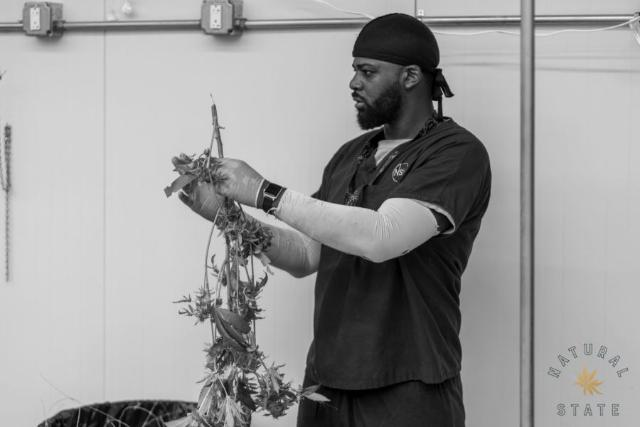
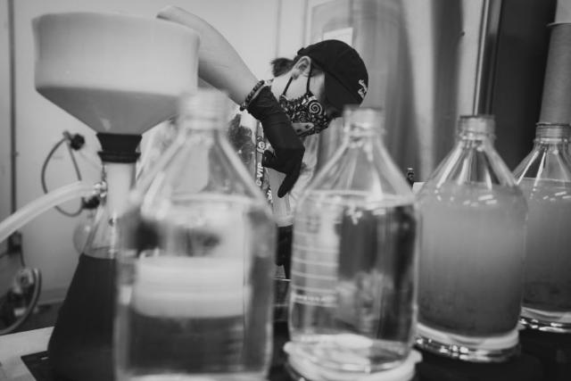
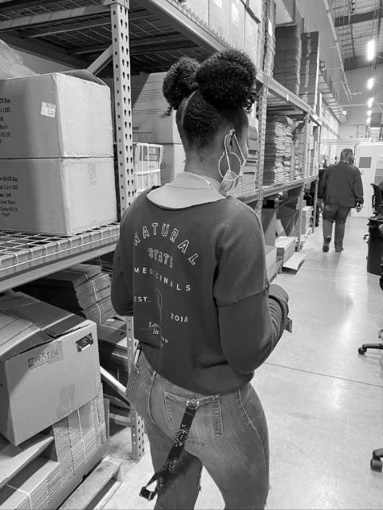
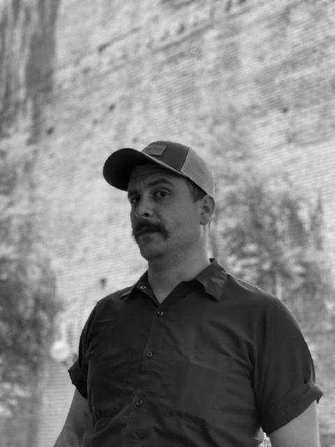
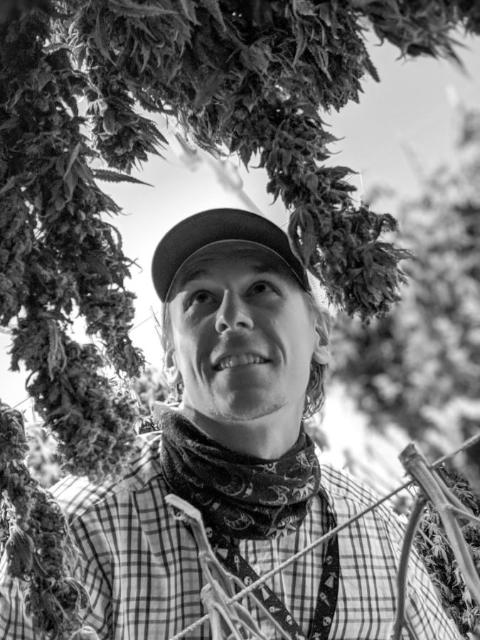
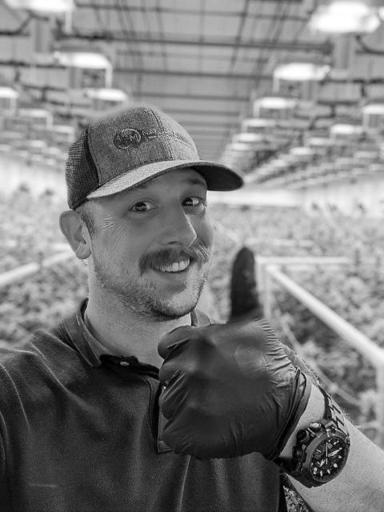
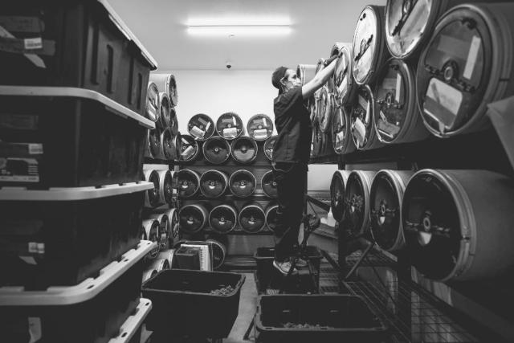
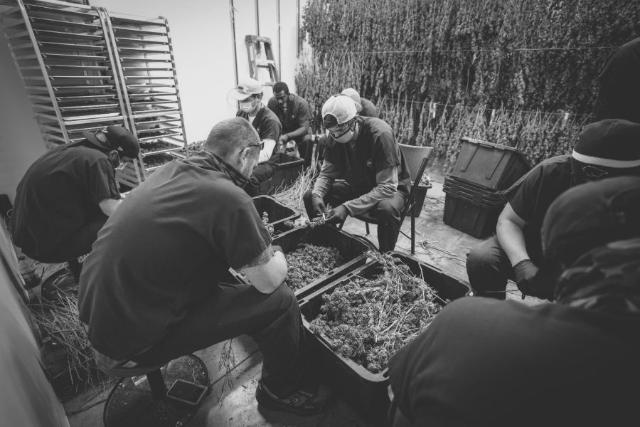
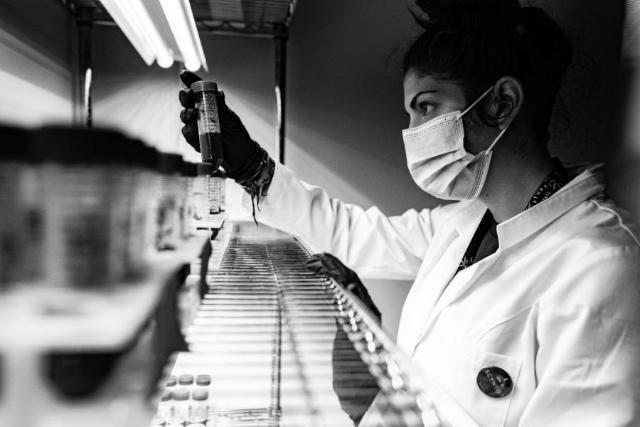
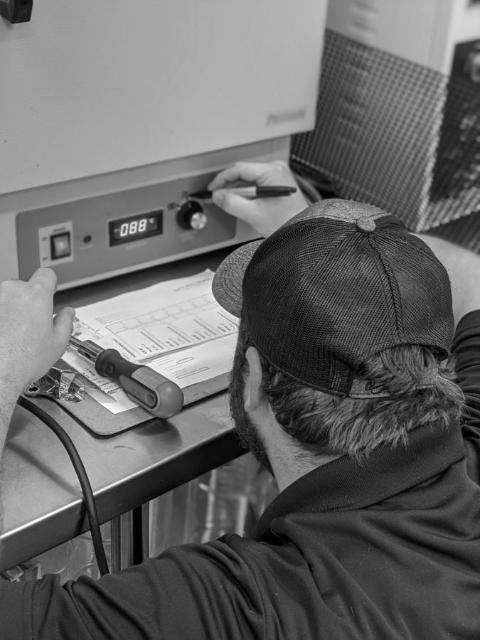
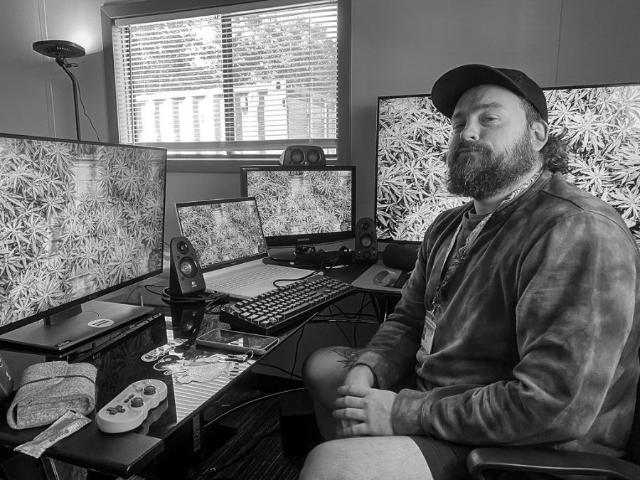
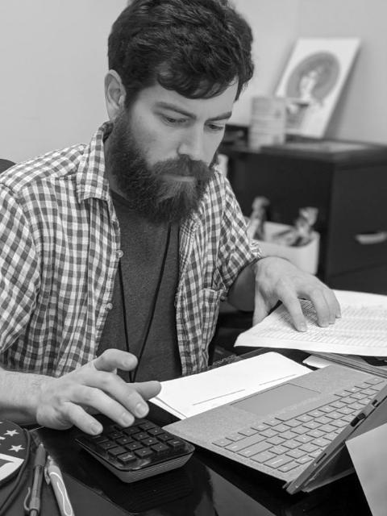
Photographs from one harvest. Click any photo to see it whole and save a copy.